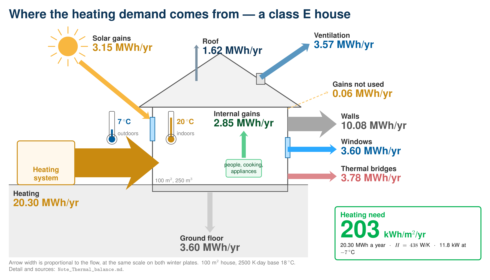
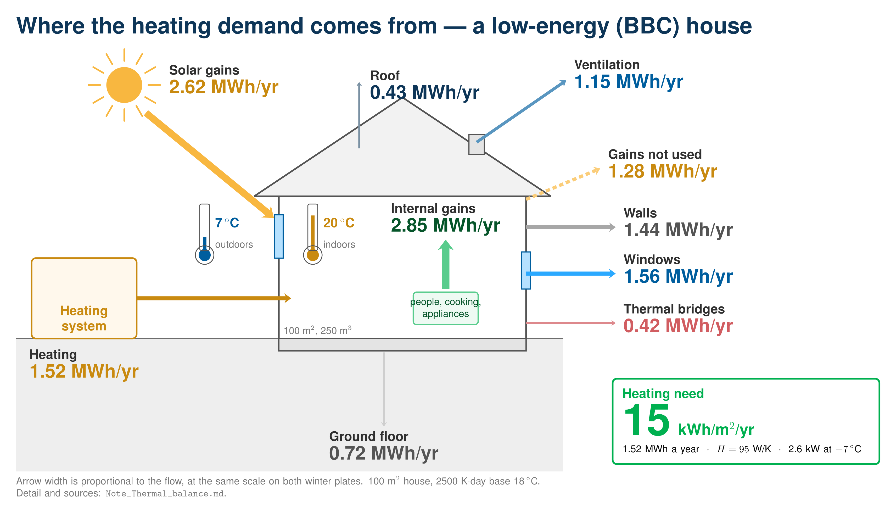
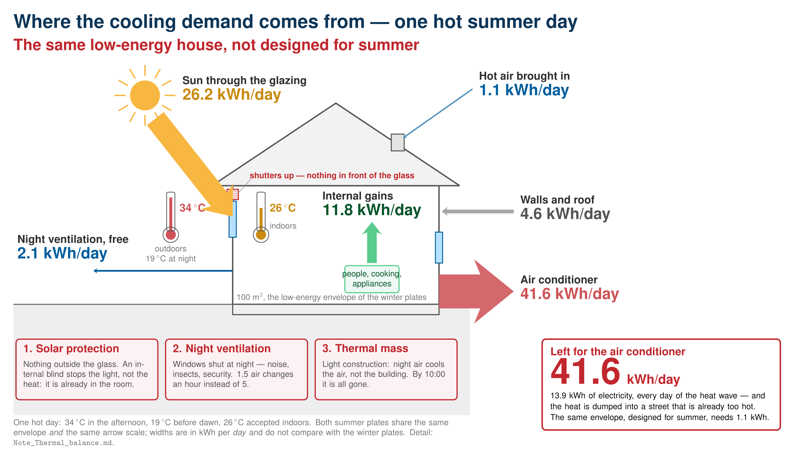
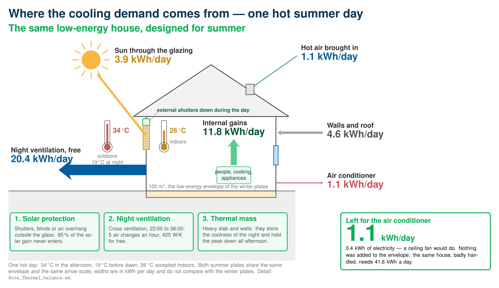
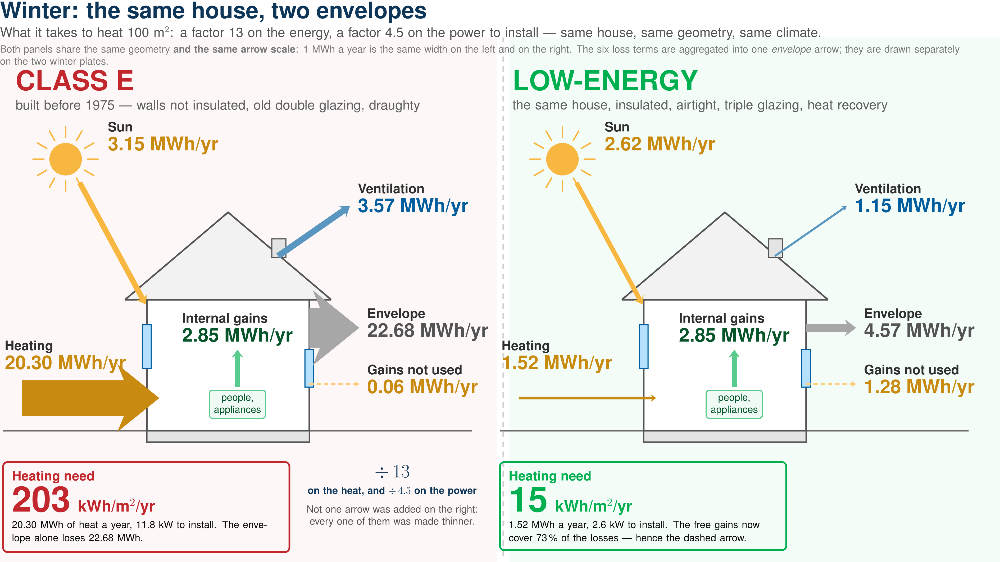
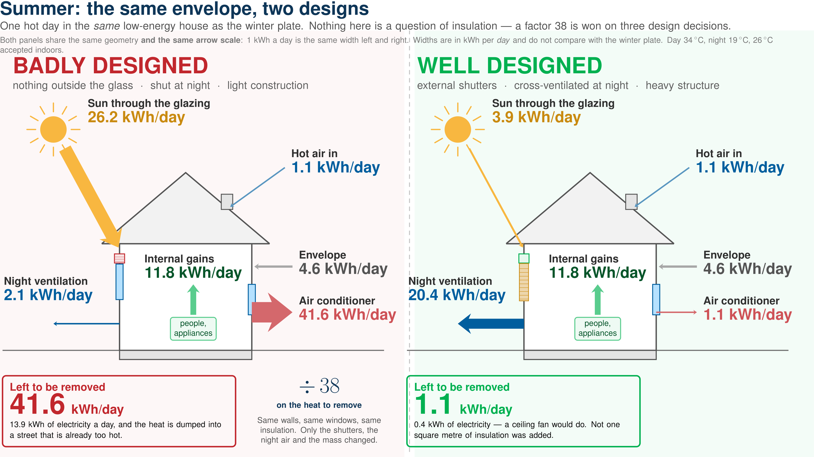
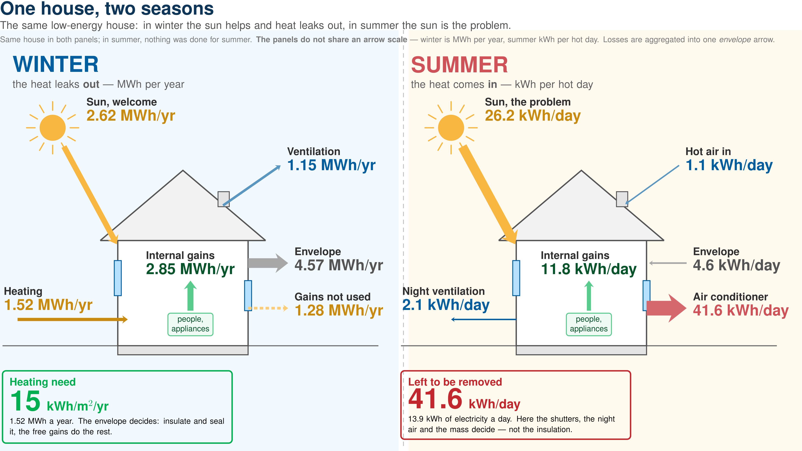

D'où viennent le besoin de chaleur et le besoin de froid d'une maison
Bilan thermique d'une maison, l'hiver et l'été : par où la chaleur se perd, ce que change le niveau BBC, ce qui décide l'été (protections solaires, ventilation de nuit, inertie). Puis la thermosensibilité, de la maison (4,4 W par degré et par mètre carré non isolée, moins de 1 rénovée) au pays (2,4 GW par degré l'hiver selon RTE), et ce qu'on en fait : l'ordre des gestes sur un logement, la page « Le parc bâti et sa thermosensibilité », le report dans le cas C.
En bref
La question : quand il fait un degré de moins dehors, de combien monte le besoin de chauffage d’une maison, et de combien monte la consommation d’électricité de tout le pays ?
La réponse : une maison ne consomme pas de chaleur, elle en perd, et ce qu’elle perd pour un degré d’écart avec l’extérieur, son coefficient de déperdition, est sa thermosensibilité ; il vaut 4,4 W par degré et par mètre carré pour une maison d’avant 1975, moins de 1 W pour la même maison rénovée, et, additionné sur les surfaces chauffées à l’électricité, il donne les 2,4 GW par degré que RTE mesure l’hiver sur la consommation française.
À quoi sert la note : à savoir quel geste réduit quoi (isoler, changer d’appareil, fermer un volet), puis à choisir et à défendre la thermosensibilité qu’on met dans une simulation du système électrique, avec la page « Le parc bâti et sa thermosensibilité » du parcours et le cas C du cours (section 7).
Plan
La note suit un seul fil, de la maison au pays.
- La maison de référence, et comment lire les planches.
- L’hiver : où passe la chaleur d’une maison non isolée, et ce qui change au niveau BBC.
- L’été : la même enveloppe, conçue ou non pour la chaleur.
- Une maison, deux saisons : presque toutes les flèches changent de sens.
- La thermosensibilité d’une maison, par mètre carré : le chiffre qui fait le pont.
- La thermosensibilité du pays, en gigawatts par degré : ce que mesure RTE, et ce qui la fait bouger.
- Ce qu’on en fait : les gestes sur un logement, la page du parcours, le cas C.
- Les chiffres répandus qui sont faux.
- Les limites du calcul, et d’où viennent ses chiffres.
- Reproduire.
1. La maison de référence
Toutes les planches montrent la même maison, pour que les comparaisons aient un sens :
| Surface habitable chauffée | 100 m², deux niveaux |
| Volume chauffé | 250 m³ |
| Murs opaques | 120 m² |
| Baies vitrées | 20 m² (un cinquième de la surface habitable) |
| Toiture / plafond sous combles | 60 m² |
| Plancher bas | 60 m² |
| Consigne intérieure | 20 °C l’hiver, 26 °C accepté l’été |
| Climat | France métropolitaine : 2500 degrés-jours base 18 °C, −7 °C au jour le plus froid retenu pour dimensionner |
Elle existe à deux niveaux de performance. Le coefficient
U d’une paroi est la puissance qu’elle laisse passer par
mètre carré et par degré d’écart entre l’intérieur et l’extérieur (en
W/m²K) ; plus il est bas, mieux la paroi isole.
| Poste | Classe E (avant 1975) | BBC (neuf ou rénovation performante) |
|---|---|---|
Murs, U |
1,40 W/m²K | 0,20 |
Toiture, U |
0,45 | 0,12 |
Plancher bas, U |
1,00 | 0,20 |
Vitrages, U |
3,00 (double ancien) | 1,30 (triple) |
| Ponts thermiques | +20 % de l’enveloppe | +10 % |
| Ventilation | simple flux + infiltrations, 0,7 vol/h | double flux, 75 % de récupération, + 0,1 vol/h d’infiltration |
Coefficient de déperdition H |
438 W/K, soit 4,38 W/K par m² | 95 W/K, soit 0,95 |
Le coefficient de déperdition H additionne tout ce que
la maison perd pour un degré d’écart : murs, toit, plancher, fenêtres,
ponts thermiques (les jonctions mal isolées entre parois) et air
renouvelé. C’est le nombre qui reviendra jusqu’à la fin de la note.
Lire une planche. Ce qui entre arrive par la gauche (soleil, chauffage) ou naît à l’intérieur (occupants, appareils) ; ce qui sort part par la droite, le haut et le bas. La largeur d’une flèche est proportionnelle au flux, et une couleur désigne un poste, la même partout. L’histogramme de droite montre que le bilan boucle : ce qui entre égale ce qui sort.
2. L’hiver : la maison non isolée, puis la même au niveau BBC


Les deux planches ont la même échelle de flèches : une même largeur vaut la même énergie. La différence entre une passoire et un BBC se voit donc sans lire un chiffre.
2.1 Le bilan boucle, et c’est le point de départ
Sur une saison de chauffe, la maison classe E reçoit 26,3 MWh (20,30 de chauffage, 3,15 de soleil, 2,85 d’apports internes) et en perd exactement autant. Il n’y a pas de « consommation » quelque part : il y a un flux qui traverse la maison. Rénover, c’est rétrécir les flèches de sortie ; changer de chaudière ne change que la façon d’alimenter la flèche d’entrée.
2.2 Où passe la chaleur, en classe E
| Poste | MWh/an | Part |
|---|---|---|
| Murs | 10,08 | 38 % |
| Ponts thermiques | 3,78 | 14 % |
| Fenêtres | 3,60 | 14 % |
| Ventilation et infiltrations | 3,57 | 14 % |
| Plancher bas | 3,60 | 14 % |
| Toiture | 1,62 | 6 % |
| Apports non utilisés | 0,06 | 0 % |
Besoin de chauffage : 20,3 MWh/an, soit 203 kWh/m²/an. Deux enseignements :
- les murs et les ponts thermiques font la moitié de ce qui sort. Changer la chaudière ne touche aucune de ces flèches ;
- la toiture est le petit poste de cette maison, non parce qu’une toiture perd peu, mais parce que celle-ci a été isolée dans les années 1980. On la traite d’abord quand elle ne l’est pas, parce que c’est le moins cher, pas parce que c’est le plus gros poste.
2.3 La même maison au niveau BBC
| Poste | MWh/an | Part |
|---|---|---|
| Fenêtres | 1,56 | 22 % |
| Murs | 1,44 | 21 % |
| Ventilation et infiltrations | 1,15 | 16 % |
| Apports non utilisés | 1,28 | 18 % |
| Plancher bas | 0,72 | 10 % |
| Toiture | 0,43 | 6 % |
| Ponts thermiques | 0,42 | 6 % |
Besoin de chauffage : 1,52 MWh/an, soit 15 kWh/m²/an. Le coefficient de déperdition est divisé par 4,6, le besoin de chauffage par 13. Trois choses changent de nature :
- Le classement s’inverse. Les fenêtres passent devant les murs : quand le mur est isolé à 0,20 W/m²K, un triple vitrage à 1,30 perd encore six fois plus au mètre carré.
- Les apports gratuits couvrent 73 % des pertes. Ils sont à peu près les mêmes dans les deux maisons (6,0 MWh en classe E, 5,5 au BBC, dont les mêmes 2,85 d’apports internes), mais ils pèsent bien plus lourd face à des pertes cinq fois plus petites. C’est pourquoi le besoin baisse plus vite que le coefficient : le soleil et le réfrigérateur chauffent la maison, la chaudière fait l’appoint.
- Une partie des apports ne sert plus à rien : 1,28 MWh arrivent quand la maison est déjà à 20 °C ; ils ne sont pas économisés, ils sont évacués (le facteur d’utilisation des apports tombe à 77 %). C’est le premier signe, en hiver, du problème qui devient le principal l’été.
2.4 La puissance, pas seulement l’énergie
Le jour le plus froid retenu (−7 °C), la classe E demande
11,8 kW et le BBC 2,6 kW. C’est
H multiplié par l’écart de 27 °C entre l’intérieur et
l’extérieur. Cette puissance décide de la taille de la chaudière, de
celle des radiateurs, de la possibilité d’installer une pompe à chaleur,
et, additionnée sur un parc, de la pointe de consommation électrique des
soirs de février. La section 5 y revient.
3. L’été : la même enveloppe, conçue ou non pour la chaleur


Le bilan d’été est fait sur une journée chaude, en kWh par jour, et non sur une saison : le besoin de froid d’une saison dépend trop du climat et du confort accepté pour être un chiffre de cours, alors que les leviers se lisent très bien sur 24 heures. Journée type : 34 °C l’après-midi, 19 °C avant l’aube, 26 °C acceptés à l’intérieur.
Les deux bâtiments ont exactement la même enveloppe, celle de la maison BBC de la section 2. Ce qui les sépare n’est pas l’isolation, ce sont les trois leviers de la conception d’été :
| Levier | Conçu pour l’été | Pas conçu pour l’été |
|---|---|---|
| Protection solaire | volets ou stores extérieurs fermés le jour : il passe 15 % du soleil | rien devant le verre (ou un store intérieur, qui ne sert à rien) : il passe 100 % |
| Ventilation de nuit | fenêtres ouvertes en courant d’air, 5 vol/h de 22 h à 6 h | fenêtres fermées la nuit (bruit, insectes, sécurité), 1,5 vol/h |
| Inertie | dalle et murs lourds : la fraîcheur de la nuit est stockée et toute récupérée | construction légère : on refroidit l’air, pas le bâtiment (35 % récupérés) |
Le bilan qui en découle :
| Sur 24 h | Conçu pour l’été | Pas conçu pour l’été |
|---|---|---|
| Soleil à travers les vitrages | 3,9 kWh | 26,2 |
| Apports internes | 11,8 | 11,8 |
| Transmission par murs et toiture | 4,6 | 4,6 |
| Ventilation avec de l’air extérieur chaud | 1,1 | 1,1 |
| Total à évacuer | 21,5 | 43,8 |
| − ventilation de nuit, gratuite | 20,4 | 2,1 |
| = reste pour le climatiseur | 1,1 | 41,6 |
| soit en électricité (rendement du climatiseur de 3) | 0,4 kWh | 13,9 |
Un facteur 38 sur le froid à produire, à enveloppe identique. Ce que les deux planches font voir :
- le soleil qui traverse le vitrage fait trois cinquièmes du problème, et c’est le seul poste sur lequel un occupant agit en trois secondes ;
- la protection solaire doit être extérieure. Un store intérieur arrête la lumière mais pas la chaleur : le rayonnement a déjà franchi le verre, il est dans la pièce ;
- la ventilation de nuit est la plus grosse machine frigorifique de la maison. Cinq volumes par heure, soit 425 W par degré, pendant huit heures, avec 6 °C d’écart entre l’air de la nuit et la maison : 20,4 kWh gratuits, à comparer aux 41,6 kWh que le climatiseur doit extraire quand on s’en prive ;
- l’inertie ne retire rien par elle-même. Une dalle lourde stocke la chaleur du jour et la rend trois ou quatre heures plus tard ; elle ne fait sortir aucun joule. Elle est utile parce qu’elle repousse la chaleur vers les heures où la ventilation de nuit peut l’évacuer. Sans ventilation de nuit, l’inertie ne sert à rien ; sans inertie, la ventilation de nuit ne sert presque à rien. Les trois leviers ne s’additionnent pas, ils se multiplient.
L’ordre des gestes est donc fixé par la figure : arrêter le soleil dehors, balayer la nuit, et seulement ensuite acheter une machine.
4. Une maison, deux saisons


Ces deux planches 16:9 portent chacune une comparaison entière sur un écran, avec la même échelle de flèches à gauche et à droite. Les six postes de déperdition y sont regroupés en une flèche « enveloppe ». Le contraste est de même nature, un facteur 13 l’hiver, 38 l’été, mais les leviers n’ont rien à voir : l’hiver on épaissit des isolants, l’été on ferme des volets et on ouvre des fenêtres la nuit.

La troisième planche met les deux saisons côte à côte, sur la même maison. Elle ne compare pas des chiffres (les unités diffèrent : MWh par an l’hiver, kWh par jour l’été) ; elle montre que presque toutes les flèches changent de sens ou de rôle :
| Hiver | Été | |
|---|---|---|
| Le soleil | est un apport gratuit qu’on cherche | est le problème qu’on doit arrêter |
| La chaleur | fuit vers l’extérieur | rentre |
| La ventilation | est une perte qu’on récupère | est le moyen d’évacuer, la nuit |
| Les apports internes | aident | nuisent |
| Ce qui décide | l’enveloppe : isolation, étanchéité | la conception : protections solaires, nuit, inertie |
Un bon bâtiment d’hiver n’est donc pas forcément un bon bâtiment d’été.
5. La thermosensibilité d’une maison, par mètre carré
Jusqu’ici, la note a compté des énergies sur une saison ou une journée. Pour passer au système électrique, il faut une autre grandeur : la thermosensibilité, c’est-à-dire la puissance de chauffage supplémentaire que demande la maison pour chaque degré de moins dehors.
5.1 Par temps froid, la thermosensibilité est le coefficient de déperdition
Tant que la maison a besoin de chauffage, la puissance à fournir vaut
H multiplié par l’écart entre la température intérieure et
la température extérieure, moins les apports gratuits. Quand la
température extérieure baisse d’un degré, la puissance monte de
H, et de rien d’autre : la thermosensibilité d’une
maison est son coefficient de déperdition. Pour la maison de
référence, 438 W par degré en classe E, 95 W au BBC. Les 11,8 kW et 2,6
kW de la section 2.4 ne sont que cette pente prolongée jusqu’à −7
°C.
Les apports gratuits ne changent pas la pente : ils fixent la température à partir de laquelle on commence à chauffer, le seuil de chauffage. Avec les seuls apports internes de la convention 3CL-DPE (4,92 W/m², section 9), soit 492 W pour 100 m², le chauffage démarre vers 19 °C dehors en classe E (20 − 492/438), et seulement vers 15 °C au BBC (20 − 492/95) ; le soleil l’abaisse encore dans la journée (calcul de cette note, statut « calculé »). Rénover agit donc deux fois : la pente baisse, et le seuil aussi. C’est l’autre façon de lire l’écart entre le facteur 4,6 et le facteur 13 de la section 2.3.
5.2 Pourquoi la rapporter au mètre carré
Une thermosensibilité par mètre carré se compare d’un logement à l’autre, quelle que soit sa taille, et se multiplie par une surface pour passer au parc. C’est le pont entre la maison et le pays.
| La maison de référence | Classe E | BBC |
|---|---|---|
Coefficient de déperdition H |
438 W/K | 95 W/K |
| Thermosensibilité par mètre carré | 4,38 W/K/m² | 0,95 W/K/m² |
| Seuil de chauffage, apports internes seuls (calculé) | ≈ 19 °C | ≈ 15 °C |
| Puissance au jour le plus froid (−7 °C) | 11,8 kW | 2,6 kW |
| Besoin de chauffage sur l’année | 203 kWh/m² | 15 kWh/m² |
5.3 Chaleur et électricité : deux pentes différentes
H est une thermosensibilité de chaleur.
La thermosensibilité électrique d’un logement dépend en
plus de l’appareil qui fournit cette chaleur, et de son rendement au
froid :
- un convecteur électrique (effet Joule) donne un kilowattheure de
chaleur par kilowattheure d’électricité, au plus froid comme en moyenne
: sa pente électrique est
H; - une pompe à chaleur divise la pente par son rendement au froid, qui est plus bas que son rendement moyen sur l’année ;
- un logement chauffé au gaz, au fioul ou au bois n’a presque pas de pente électrique.
L’été, la pente d’une maison dépend moins de H que du
soleil qui traverse les vitrages et de la ventilation de nuit (section
3) : la note ne la chiffre pas par degré.
6. La thermosensibilité du pays, en gigawatts par degré
6.1 Ce que mesure RTE
RTE, le gestionnaire du réseau de transport d’électricité, mesure la thermosensibilité de la consommation française sur ses données :
- l’hiver, sous 15 °C, chaque degré perdu ajoute environ 2 400 MW à la consommation (Bilan électrique 2020, p. 19 ; Futurs énergétiques 2050, chapitre 8, § 8.3.1, p. 342). Le bilan du premier semestre 2026 donne « de l’ordre de + 2,0 à + 2,4 GW par degré en moins » (RTE, 2026, p. 14) : l’ordre de grandeur n’a guère bougé ;
- l’été, au-dessus de 25 °C, chaque degré de plus ajoute de 0,7 à 1,1 GW, selon l’heure de la journée ; c’est la climatisation et la ventilation (RTE, premières analyses de l’été 2026, p. 2). Le chiffre de 0,5 GW par degré, parfois cité, n’est pas celui de RTE.
Ces sources ont été relues le 18/11/2026 par la session qui a construit la page du parcours ; les deux chiffres attendent leur fiche dans le Cerveau (entrants du 18/11/2026).
6.2 De la maison au pays
Dans les données du parc de 2020 du Net Zero Game (le jeu de prospective du cours), les logements et les bureaux chauffés à l’électricité, par effet Joule ou par pompe à chaleur, couvrent 1 054 millions de m². Les 2,4 GW par degré de RTE, rapportés à cette surface, font 2,3 W par degré et par mètre carré chauffé à l’électricité (calcul de la page du parcours, section 7.2) : entre la maison classe E (4,38) et la maison BBC (0,95).
C’est l’ordre de grandeur attendu : le parc mêle des logements anciens et rénovés ; une partie est chauffée par des pompes à chaleur, qui divisent leur part de la pente par leur rendement au froid ; et un appartement, qui partage des murs avec ses voisins, perd moins par mètre carré qu’une maison individuelle. La comparaison relie les deux échelles ; elle ne mesure rien.
Elle donne aussi deux bornes simples (calcul de cette note, statut « calculé ») : si ces 1 054 millions de m² perdaient comme la maison classe E et étaient chauffés par convecteurs, la pente serait de 4,38 × 1 054 ≈ 4,6 GW par degré ; s’ils perdaient comme la maison BBC, de 0,95 × 1 054 ≈ 1,0 GW par degré. Ce n’est pas une estimation du parc réel : c’est l’écart que l’enveloppe des bâtiments peut faire, à appareils inchangés.
6.3 Ce qui fait bouger la pente nationale
La pente nationale n’est pas une constante. Elle suit l’appel du chauffage électrique au plus froid, et chaque geste sur le parc la déplace dans un sens connu :
| Geste | Effet sur la pente d’hiver |
|---|---|
| Rénover, baisser la consigne (sobriété) | baisse : moins de chaleur à fournir par degré, pour tous les appareils |
| Remplacer des convecteurs par des pompes à chaleur | baisse : leur part de la pente est divisée par le rendement au froid des pompes |
| Remplacer une chaudière par une pompe à chaleur | monte : cette chaleur ne dépendait pas de l’électricité |
| Installer une pompe à chaleur hybride (avec chaudière à gaz) | monte peu : elle passe surtout au gaz les soirs les plus froids, mais elle garde le gaz |
| Équiper plus de logements en climatisation | ne change pas la pente d’hiver ; fait monter celle d’été |
C’est pourquoi l’électrification du chauffage fait monter la pente, et la rénovation la fait baisser. Au scénario de référence du Net Zero Game, la pente d’hiver passe de 2,4 GW par degré en 2020 à 3,3 vers 2040, puis redescend à 3,0 en 2050 (modèle du jeu, statut « calculé » ; les années intermédiaires supposent que chaque geste avance en ligne droite de 2020 à 2050, ce qui est une hypothèse de rythme et non une trajectoire étudiée).
7. Ce qu’on en fait
7.1 Pour un logement : l’ordre des gestes
L’hiver, on rétrécit les flèches de sortie avant de toucher à l’appareil :
- isoler les combles s’ils ne le sont pas : c’est le geste le moins cher, et c’est le seul cas où la toiture est un gros poste (section 8.3) ;
- traiter les murs et les ponts thermiques, la moitié des pertes d’une maison d’avant 1975 ;
- après isolation, les fenêtres et l’air renouvelé deviennent les points faibles : vitrages, étanchéité, ventilation double flux ;
- changer d’appareil ensuite. Cela ne réduit aucune perte, mais choisit qui paie la pente : le réseau électrique (convecteur, pompe à chaleur) ou le gaz. Une maison rénovée demande aussi une pompe à chaleur plus petite (2,6 kW au lieu de 11,8 au plus froid).
L’été, l’ordre est celui de la section 3 : protections solaires extérieures, ventilation de nuit avec un bâtiment lourd, et seulement ensuite une machine.
7.2 Pour le système : la page « Le parc bâti et sa thermosensibilité »
La page «
Le parc bâti et sa thermosensibilité » du parcours du cours
(ressource nzg-bloc-batiment) reprend le bloc « bâtiment »
du Net Zero Game, avec ses équations et ses données. On y règle l’état
du parc en 2050 : part du parc rénovée en profondeur, sobriété sur la
consigne, part de la chaleur fournie par l’électricité, et répartition
entre pompes à chaleur air-air, air-eau, hybrides, convecteurs et
grandes pompes à chaleur sur réseau de chaleur. Elle calcule, pour 2020
à 2050, l’électricité de chauffage, l’appel du chauffage électrique à la
pointe d’hiver et les thermosensibilités d’hiver et d’été. En 2020, elle
redonne par construction les 40 GW de pointe et les 2,4 GW par degré de
RTE.
Quatre essais à faire, chacun relié à une section de cette note :
- la rénovation seule : partir du scénario de référence, mettre la part rénovée à zéro, puis au maximum, sans rien toucher d’autre. On lit sur la pente d’hiver l’effet de l’enveloppe (sections 2 et 6.2) ;
- l’appareil seul : à part électrique égale, remplacer les convecteurs par des pompes à chaleur air-eau. La pente baisse du rendement au froid des pompes (section 5.3) ;
- l’électrification : monter la part de la chaleur fournie par l’électricité, sans rénover. La pente monte, puisque la chaleur prise au gaz passe sur le réseau (section 6.3) ;
- les hybrides : remplacer une partie des pompes à chaleur par des hybrides. La pente monte moins, mais le gaz reste.
La page dit aussi ce qu’elle ne fait pas : le pilotage du chauffage n’est pas chiffré, il n’y a qu’un niveau de rénovation (un gain de 60 % du besoin pour une rénovation profonde, constante du modèle), le parc ne grandit pas, et la rénovation n’y change pas la pente d’été, alors qu’une maison bien conçue (section 3) a beaucoup moins besoin d’être rafraîchie.
7.3 Reporter l’hypothèse dans le cas C
Le cas C du cours, « Thermosensibilité : que coûte la pointe d’hiver, selon la météo ? », simule heure par heure le système électrique français de 2035 sur 30 années météo, et demande ce que coûte la pointe quand les pompes à chaleur remplacent le chauffage au gaz et au fioul. Il ne prend pas de pente en entrée : il tire sa thermosensibilité d’une régression de la demande du TYNDP 2026 (l’exercice de prospective des gestionnaires de réseau européens) sur la température.
Pour y reporter une hypothèse de la page, on multiplie les coefficients de la régression par le rapport entre deux années de la page, l’année de la demande du cas (2035) et l’année dont on veut l’hypothèse ; l’encadré « Reporter le résultat dans le cas C » de la page donne ces rapports et le code. Deux précautions, que la page détaille :
- le cas ajoute déjà ses propres pompes à chaleur. Si on les garde, on multiplie le chauffage par le rapport des besoins de chauffage (rénovation et sobriété seulement), pour ne pas compter deux fois l’électrification ; si on les retire, on peut prendre le rapport des pentes d’hiver, qui contient toute l’électrification de la page ;
- dans le notebook, on calcule la normalisation avant de modifier les coefficients.
Trois pistes de mini-projet du cas C prolongent directement cette note : « Rénovation contre pompes à chaleur : quel mélange abaisse le plus la pointe, à coût égal ? » (sections 2 et 6.3) ; « PAC hybrides (avec appoint gaz) : combien de gaz garder pour passer les vagues de froid ? » (section 6.3) ; « Pilotage du chauffage et inertie des bâtiments : décaler la chauffe de quelques heures » (l’inertie de la section 3, utilisée l’hiver). Pour refaire soi-même la régression, l’activité « Séparer la part fixe et la part thermosensible de la demande » du parcours la montre pas à pas.
7.4 Citer une thermosensibilité
Une pente ne se cite jamais seule. Il faut dire :
- son seuil : RTE compte l’hiver sous 15 °C et l’été au-dessus de 25 °C ;
- ce qu’elle mesure : de la chaleur (
H, en W/K) ou de l’électricité (en GW/°C), un logement ou le pays ; - sa méthode : la pente d’une régression dépend de ce qu’on met à côté d’elle (le calendrier, les mois). Le cas C chauffe sous le même seuil que RTE, mais la pente de sa régression est plus faible que celle de RTE pour cette raison.
8. Les chiffres répandus qui sont faux
8.1 « Le DPE E, c’est 250 kWh/m²/an de chauffage »
Non. Les classes du DPE (diagnostic de performance énergétique) sont en énergie primaire, tous usages (chauffage, eau chaude, refroidissement, éclairage, auxiliaires), avec un double seuil énergie et carbone depuis 2021. La classe E va de 230 à 330 kWh/m²/an d’énergie primaire. Le besoin de chauffage utile calculé ici, 203 kWh/m²/an, est une autre grandeur : il ne contient ni l’eau chaude, ni le rendement de la chaudière, ni le passage en énergie primaire. Les deux nombres se ressemblent par coïncidence, et les confondre est l’erreur la plus fréquente du sujet.
8.2 « Le BBC, c’est 50 kWh/m²/an »
Le label BBC-Effinergie fixe 50 kWh/m²/an d’énergie primaire, modulés selon la zone climatique et l’altitude, sur cinq usages. Le besoin de chauffage utile d’un tel bâtiment est de l’ordre de 15 à 25 kWh/m²/an : là encore, deux grandeurs différentes. Les 15 kWh/m²/an de cette note sont un besoin utile, dans le bas de la fourchette parce que l’enveloppe retenue est très bonne.
8.3 « 30 % des pertes passent par la toiture »
C’est le chiffre le plus répété du secteur, et il ne veut rien dire hors contexte : il décrit une maison ancienne à combles non isolés. Dès que les combles sont traités, ce qui est le cas de la plupart des maisons depuis les années 1980, y compris notre classe E, la toiture retombe à 6 % et les murs prennent la première place. Une répartition en pourcentages n’est pas une propriété des bâtiments : c’est une propriété d’un bâtiment.
9. Les limites du calcul, et d’où viennent ses chiffres
Ce qui vient d’une source officielle : les apports
internes. Ils suivent la convention de la méthode 3CL-DPE 2021
(arrêté du 31 mars 2021, annexe 1), archivée dans le dossier
bibliographie/ :
| Composante | Valeur | Origine |
|---|---|---|
| Équipements | 3,18 W/m² | 5,7 W/m² quand les occupants sont là et éveillés, 1,1 W/m² sinon, moyennés sur la semaine type de la convention |
| Éclairage | 0,34 W/m² | 1,4 W/m² pendant 2123 h sur 8760 |
| Occupants | 1,40 W/m² | 90 W par adulte équivalent, 1,975 adulte équivalent pour 100 m², présents 132 h sur 168 |
| Total | 4,92 W/m² |
C’est ce qui permet de dire, sans arbitraire, que dans un BBC les apports gratuits couvrent près des trois quarts des pertes.
Ce que le calcul ne prétend pas faire.
- Ce n’est pas un calcul réglementaire. La méthode 3CL-DPE compte en degrés-heures base 19 °C par zone climatique, mois par mois ; cette note compte en degrés-jours base 18 °C sur la France entière. Cela suffit à classer les postes, pas à établir une étiquette.
- Les 2500 degrés-jours et les 350 kWh/m² de vitrage sur la saison sont des ordres de grandeur d’usage, sans document archivé. Une extraction PVGIS (l’outil d’ensoleillement de la Commission européenne) par façade rendrait la ligne « soleil » défendable ; c’est la première amélioration à faire.
- Le facteur d’utilisation des apports vient de la
forme classique de la norme EN ISO 13790, η = (1 − γ^a) / (1 − γ^(a+1))
avec
a = 3; la norme est payante et n’est donc pas dansbibliographie/. - Le rendement du climatiseur (3 kWh de froid par kWh d’électricité) est bas-moyen : le parc réel va de 2,5 à 5. Le message de la planche d’été n’en dépend pas.
- Le passage au pays (section 6.2) rapproche une maison individuelle de référence et un parc qui mêle maisons, appartements et bureaux : il donne un ordre de grandeur, pas une mesure.
10. Reproduire
cd Thematic_analysis/Building/Thermal_balance
python3 compute_balance.py # le bilan poste par poste, à l'écran et en CSV
./build_figures.sh # les dix planches, PNG + PDF + SVGToutes les hypothèses sont en tête de
compute_balance.py. Les figures ne contiennent aucun
chiffre saisi à la main : elles lisent
figures/_balance_numbers.tex, que le script écrit. Changer
une hypothèse et relancer le build suffit à refaire toutes les planches
de façon cohérente. Les chiffres de la section 6 (parc de 2020, scénario
de référence) viennent du dépôt du Net Zero Game
(app/blocks/batiment.yaml,
python3 app/tools/block_page.py --check).
11. Vidéos, billets et posts sur le même sujet
Des vidéos courtes, des billets de blog et des posts LinkedIn de l’auteur reprennent des points de cette note.
- Variabilité de la consommation électrique et thermosensibilité (billet de blog, 2019) : la thermosensibilité de la consommation électrique française, mesurée sur les séries RTE et Météo-France (section 6.1).
- Quels modes de chauffage en 2050 ? Ma contribution à la SNBC (billet de blog, 2020) : les scénarios de chauffage du parc bâti à l’horizon 2050 et leur effet sur la pente électrique nationale (section 6.3).
- Estimation de la performance énergétique du parc résidentiel (billet de blog, 2022) : ce que les données ouvertes du DPE disent de la performance du parc de logements français, et les limites de l’étiquette (section 8.1).
Aucune vidéo ni série YouTube, aucun post LinkedIn de l’auteur sur le
bâtiment résidentiel ou sa thermosensibilité n’a été retrouvé au
23/11/2026 (chaîne YouTube et inventaire
Communication/Linkedin vérifiés) ; seule une vidéo existe
sur une pompe à chaleur, mais industrielle, déjà citée dans la note « La
chaleur des usines ».
Historique
- 2026-11-23 · v3 · ajout de la section 11 « Vidéos, billets et posts sur le même sujet » (session curateur, tâche f2b69885), à la demande de Robin, en cohérence avec les quatorze autres notes du site du parcours (commits b84f454 et 48288a9 de Thematic_analysis, 22/11/2026) : trois billets de blog sur la thermosensibilité (2019), la SNBC chauffage 2050 (2020) et le DPE open data (2022), tous vérifiés en ligne le 23/11/2026 ; aucune vidéo ni post LinkedIn de l’auteur sur le bâtiment résidentiel trouvé à cette date
- 2026-11-19 · v2 · réécriture (session curateur, tâche d3c6ebe9), à
la demande de Robin (18/11) : « En bref » en trois phrases (question,
réponse, usage), plan annoncé et suivi, fil de la maison au pays ;
nouvelles sections 5 (thermosensibilité d’une maison par mètre carré,
seuil de chauffage calculé), 6 (thermosensibilité nationale : RTE 2,4
GW/°C l’hiver, 0,7 à 1,1 l’été ; 1 054 Mm² chauffés à l’électricité, 2,3
W/K/m² ; bornes calculées 4,6 et 1,0 GW/°C ; scénario de référence du
jeu) et 7 (gestes sur un logement, page « Le parc bâti et sa
thermosensibilité » du parcours, report dans le cas C, citer une pente)
; schémas et tableaux gardés ; « Écrire simple » appliqué (termes
expliqués au premier passage) ; titre de niveau 1 ajouté, que
pdf/build_pdf.shprend pour titre du PDF (il affichait « Note_Thermal_balance ») - 2026-11-19 · v2 · correction : ventilation de nuit de 425 W/K (5
vol/h × 250 m³ × 0,34 Wh/m³K) et 6 °C d’écart, au lieu de « 340 W/K
entre 19 et 25 °C » ; les 20,4 kWh étaient justes
(
compute_balance.py) ; même correction dans la planchecooling_balance_summer_good, reconstruite - 2026-11-19 · v2 · correction : les apports gratuits ne sont pas identiques dans les deux maisons d’hiver (6,0 MWh en classe E, 5,5 au BBC : le triple vitrage laisse passer moins de soleil) ; l’ancien texte disait qu’ils « ne changent pas d’un cas à l’autre »
Télécharger la version PDF (les liens y restent actifs).